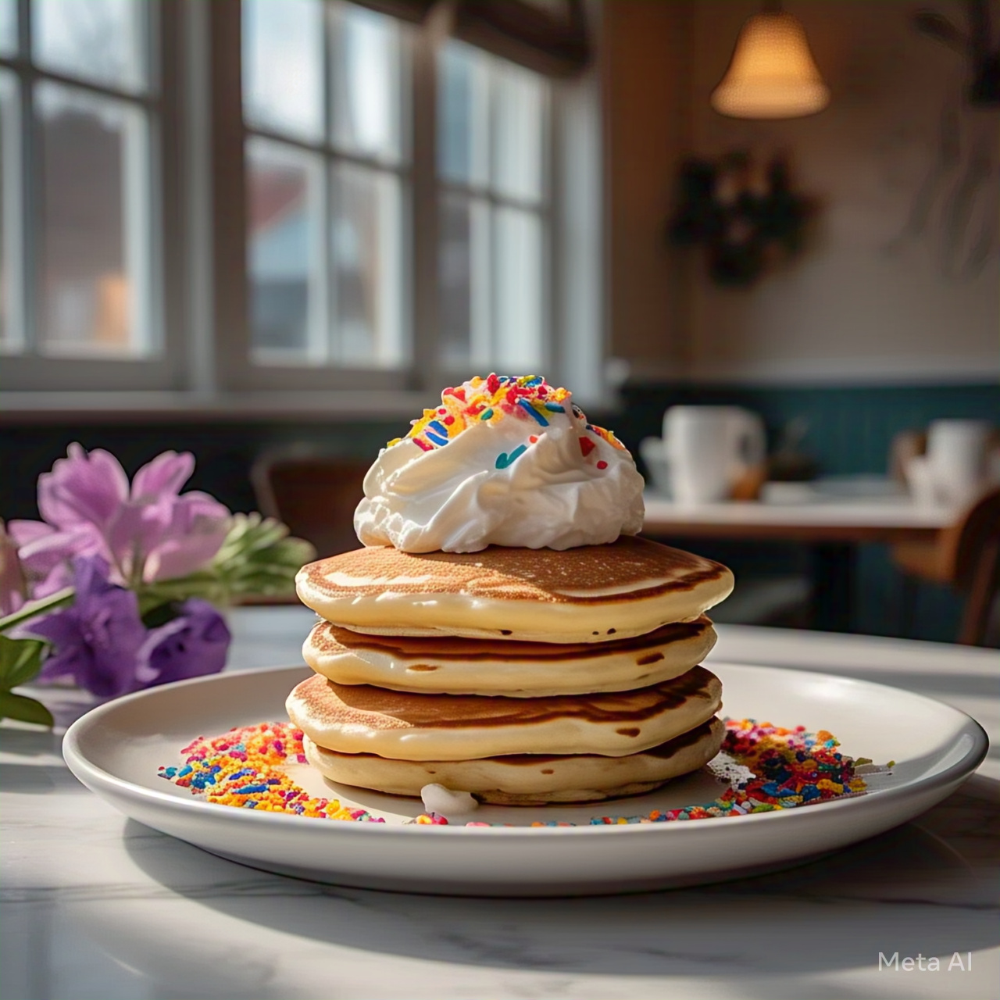

Unicorn Pancakes

Ingredients:
- 1 cup ube (purple yam) puree
- 1 1/2 cups pancake mix
- 1 cup milk
- 1 egg
- 1 tbsp sugar
- Butter for cooking
- Whipped cream
- Rainbow sprinkles
Preparation:
- In a bowl, mix pancake mix, milk, egg, ube puree, and sugar until smooth.
- Heat a non-stick skillet over medium heat and add a small amount of butter.
- Pour pancake batter onto the skillet, about 1/4 cup for each pancake.
- Cook until bubbles form on the surface, then flip and cook until golden brown.
- Stack pancakes on a plate.
- Top with whipped cream and a generous sprinkle of rainbow sprinkles.
- Dive into your magical Unicorn Ube Pancakes and enjoy!